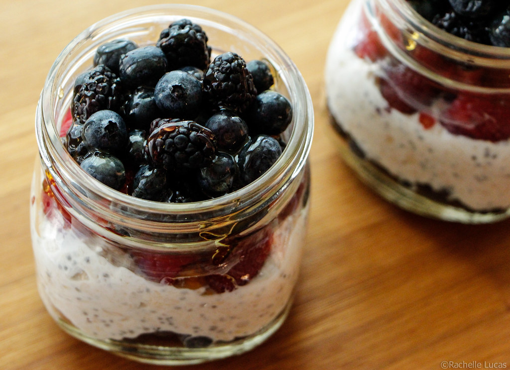

Overnight Oats

If you are into mealprepping this is a great one to have on your weekly rotation.
Make this receipe your own by modifying any of the ingredients!
INGREDIENTS
- 1 C. Oats
- 1/2 C. Blackberries
- 1/2 C. Blueberries
- 1/2 C. Raspberries
- 1 C. Milk
- 1 tbsp. Honey-optional
STEPS
- Place all ingredients into a mason jar
- Close the jar and place in the refriderator for 6-8 hours
- Enjoy.
Home